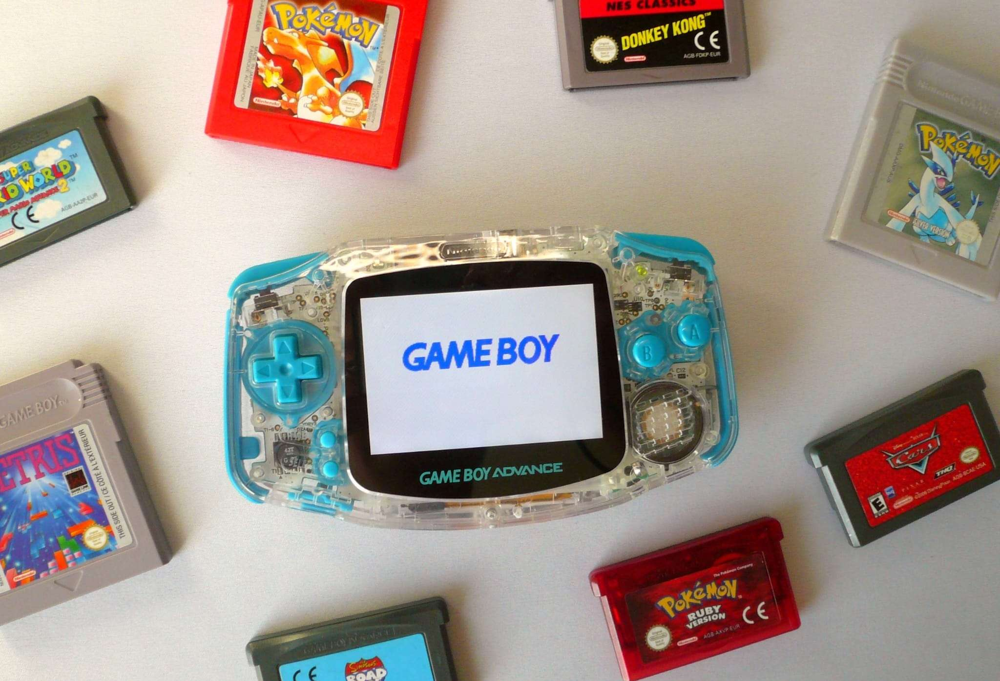
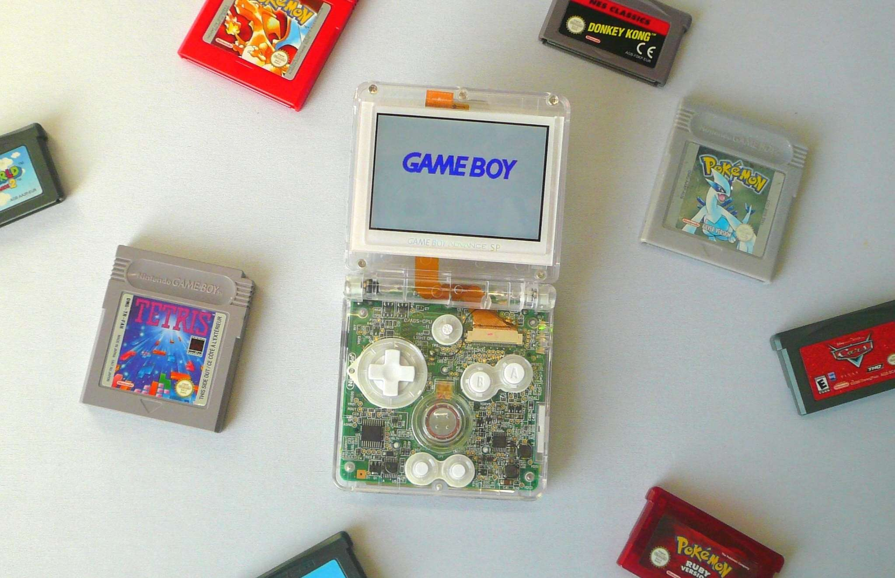
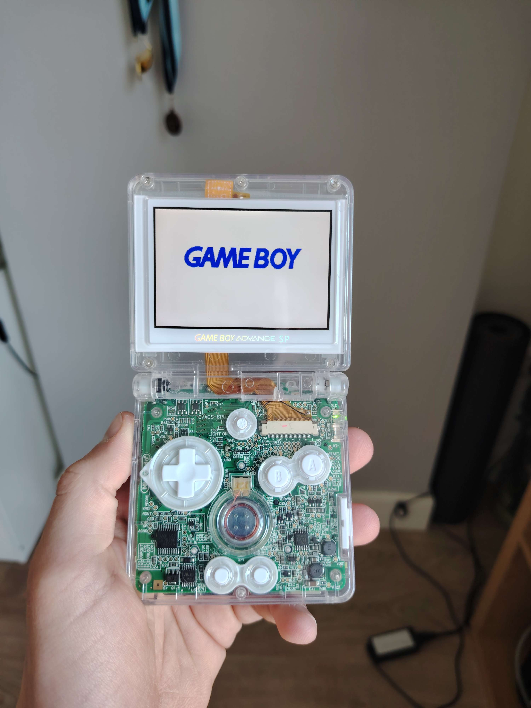
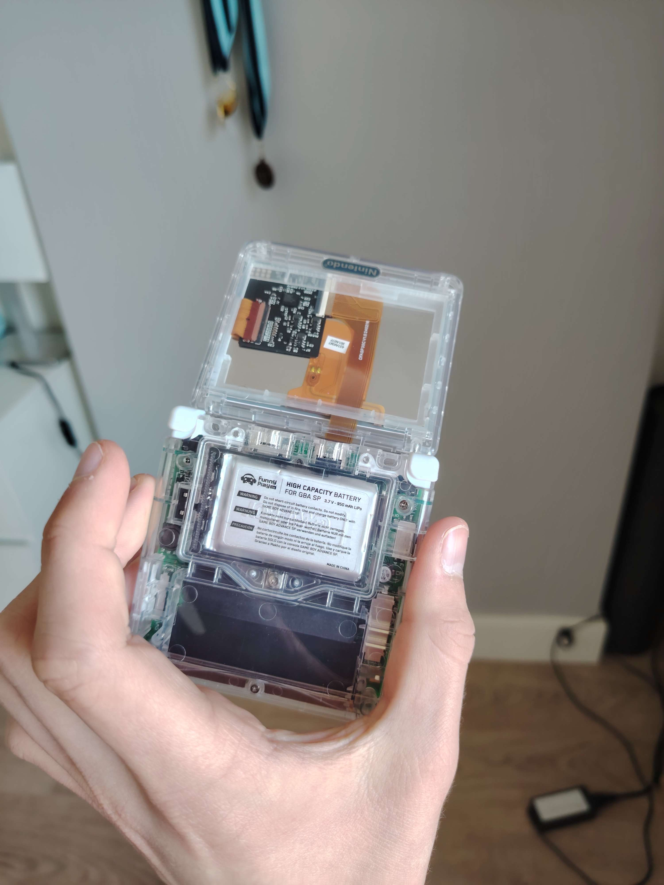
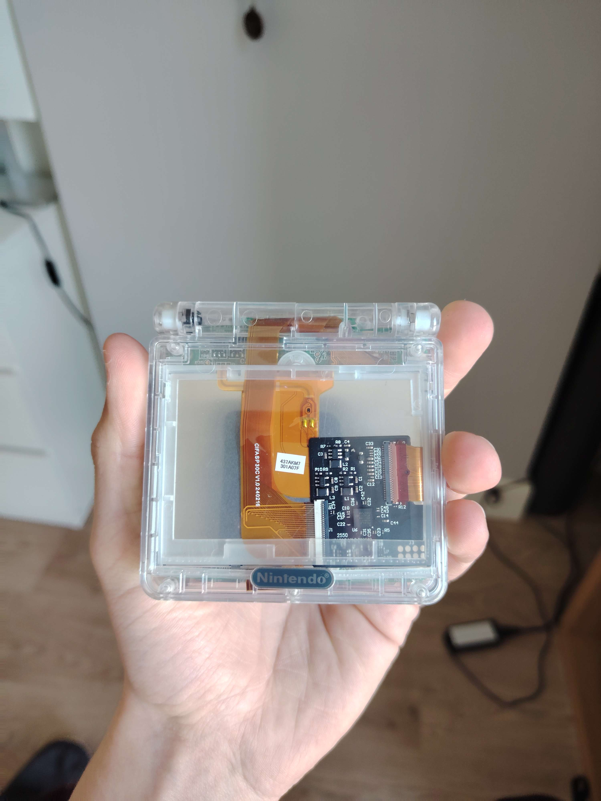
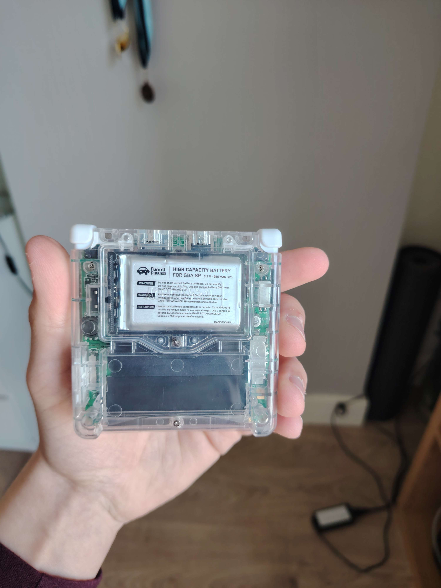
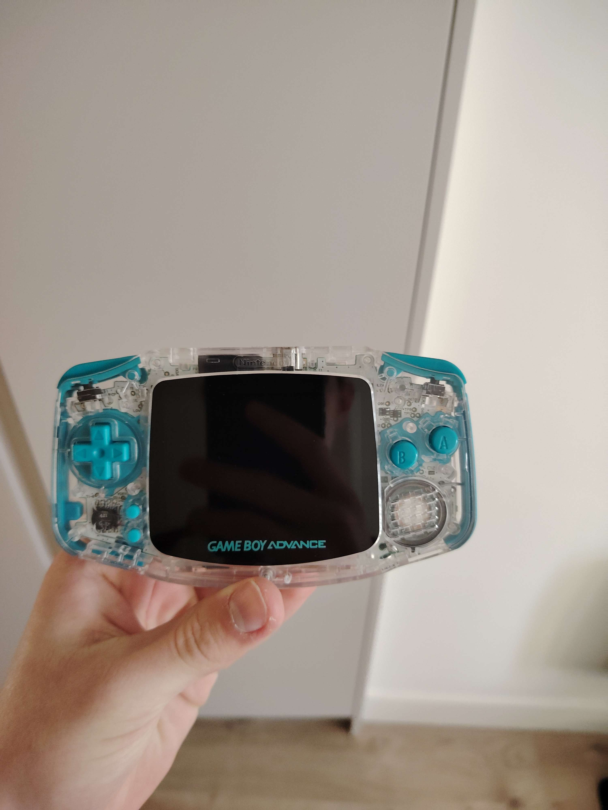
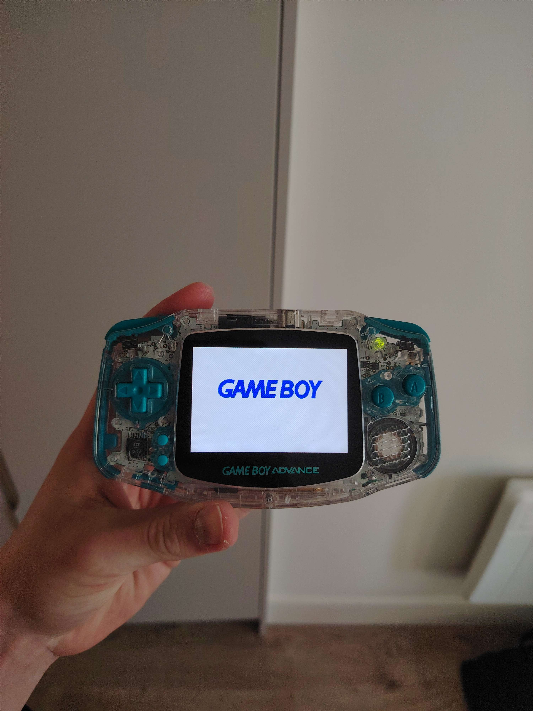
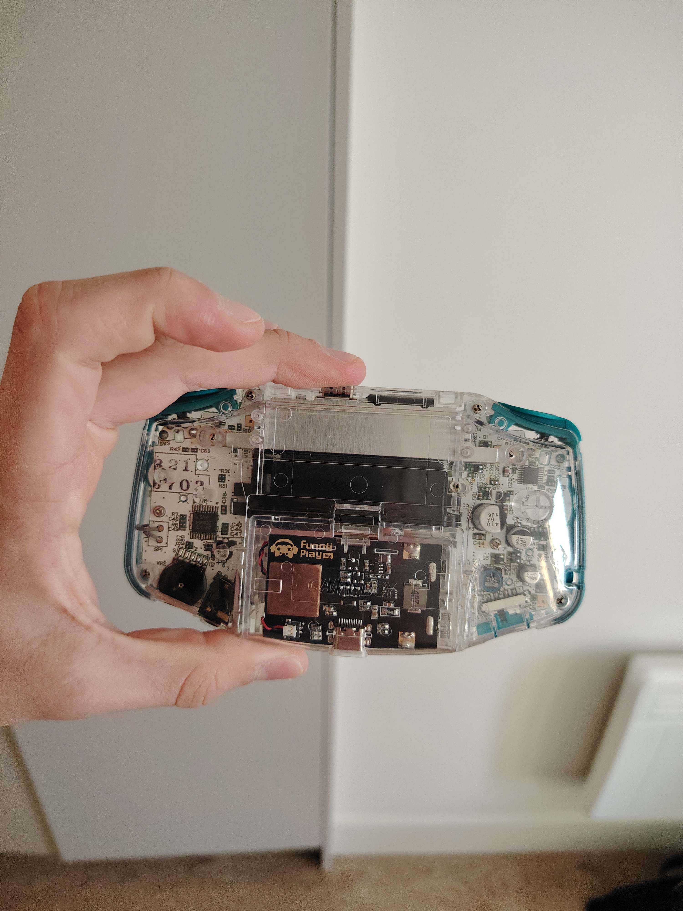

A Modded Gameboy Advanced, and a Modded Gameboy Advanced SP.


I modded two of my GBAs (Gameboy Advanced) one which was the base GBA and the other which was the GBA SP which is the one with the Clamshell design.
To Mod them I had to buy parts needed or the mods off of FunnyPlaying.
The parts I used were a plastic shell, plastic buttons, IPS GBA and GBA SP Backlight M2 LCD (LCD Screen) and a Rechargable Battery for the GBA.
I loved working on the mod I learned a lot from this project like how to solder (which im still not the best at) and whats inside an electronic.
The mod made my Gameboys so much better and so much nicer to play on!






